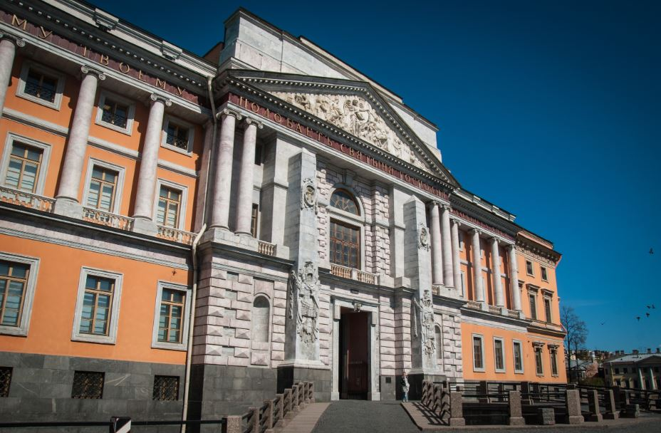
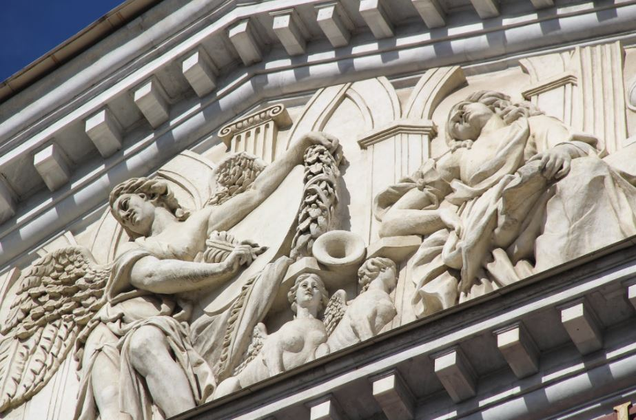

Цена: от 2500 ₽.
Михайловский замок был построен по проекту опального сына императрицы Екатерины II Павлом Петровичем. Он терпеливо ждал, когда мать освободит для него престол. Императрица запретила сыну приезжать в столицу, оправив в Гатчину. Павел Петрович ждал. Все это время он проектировал свой идеальный замок. Сейчас в музее хранятся наброски дворца, сделанные его рукой. В проекте сооружения Павла предусмотрены защитные рвы с водой, мосты с подъемными механизмами, окна-бойницы. По плану замок очень похож на Бастилию и должен был стать абсолютно неприступным. Так как император считался Великим Магистром Мальтийского ордена, он объединил в архитектуре Михайловского замка элементы романтизма и мистики.
Во время экскурсии гид раскроет таинственное прошлое строительства Михайловского замка. Он расскажет о спешке, с которой император строил здание, поведает об обстоятельствах его убийства, а также почему императорская резиденция пришла в запустение и теперь называется Инженерным дворцом. Посетители экскурсии прогуляются по парадным залам замка, посетят царскую опочивальню. В музейной экспозиции выставлены старинные картины и скульптуры, особенно ценным считается полотно, на котором император Павел I изображен рядом со своим убийцей. Ночную экскурсию гид сопровождает интересными историями о тайных ходах Михайловского замка, призраке, которого до сих пор боятся прохожие, легендах, которыми пропитаны буквально все комнаты и коридоры. Естественно, он расскажет о трагических событиях 1801 года, когда был убит император.
Входной билет в Михайловский замок не включен в стоимость ночной экскурсии. Цена составляет 450 рублей с человека, ребенку до 16 лет вход бесплатный. Билеты в Михайловский замок можно предварительно забронировать онлайн на сайте Русского музея.
Экскурсия начинается возле Михайловского замка.